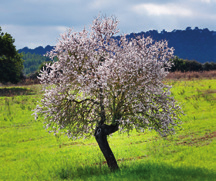

Pueden ser árboles, arbustos y hierbas y se pueden encontrar en todo tipo de ambientes, incluidos tanto el desierto como el mar. La mayoría de las plantas de nuestro planeta son angiospermas. Algunos ejemplos son los siguientes:
Violeta
Olivo
Rosa silvestre
Almendro
Estas plantas comparten las siguientes características:
Sus semillas están encerradas en frutos.
Sus hojas presentan variadas formas y adaptaciones. A veces son perennes, aunque también pueden ser caducas.
Las flores son vistosas y muy diversas. Pueden ser unisexuales, si bien la mayoría son hermafroditas.
Los óvulos están protegidos en un ovario que no abandonan hasta que se convierten en semillas, las cuales maduran al mismo tiempo que el ovario se transforma en un fruto.
Clasificación de las angiospermas
Las angiospermas se clasifican en monocotiledóneas y dicotiledóneas, en función de que la semilla presente un embrión con una primera hoja o con dos.
Monocotiledóneas
Los embriones tienen una única hoja o cotiledón en su semilla, los nervios de sus hojas son paralelos, y las envolturas florales suelen tener tres o seis partes.
Dicotiledóneas
Los embriones poseen dos hojas o cotiledones en su semilla, los nervios de las hojas son ramificados, y las envolturas florales suelen tener cuatro o cinco partes.
Árbol solitario en una colinaFlor blanca con hojasFlores violetasArbusto floreciente

Árbol en florPlántula brotandoRama de manzano con florSección transversal de una manzanaPersonaje de planta de dibujos animadosFlor de orquídea